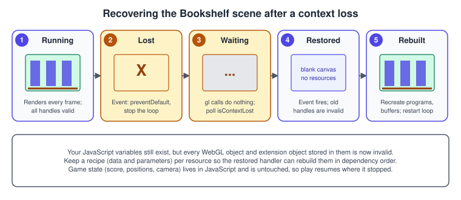
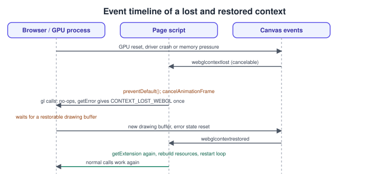
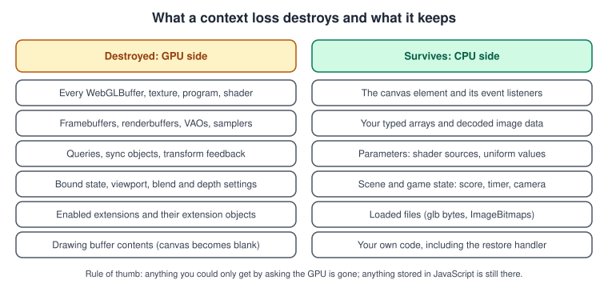
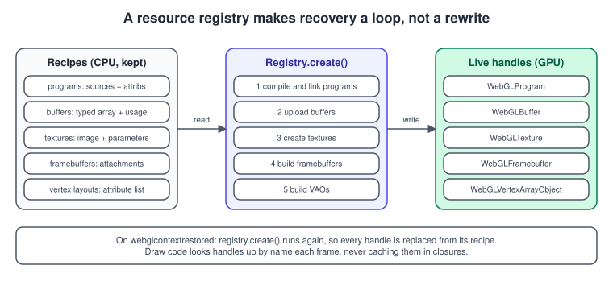

Context Loss and Robustness
|
This content was generated with the assistance of AI and should be verified against the official documentation before being relied on in production. |
A WebGL page does not own the GPU: the browser, the operating system and the driver share it with every other tab and application. When the GPU is reset, the driver crashes, the machine runs short of video memory or the browser decides to reclaim a context, the browser loses your context: every GPU object you created disappears, and your drawing code silently stops working. A page that ignores this shows a blank canvas until the user reloads. A robust page notices, waits, rebuilds its resources and carries on exactly where the game was. Context loss is rare on a desktop PC and more common on phones, laptops that switch GPUs, and pages that hold several contexts, so it is worth an afternoon of work in any non-trivial app.
The facts were checked in November 2026 against the WebGL 1.0 and 2.0 specifications (editor’s drafts dated 2026-06-30), the MDN pages for
WEBGL_lose_context and context attributes, and the three.js documentation for r187. The mechanism is the same in WebGL 1 and WebGL 2. It works in
every evergreen browser; the example code needs only a page served over HTTP(S), for instance by a local Vite server.
In the running example this is the "context-loss recovery" step of the raw WebGL track. It comes after the picking step and before the OffscreenCanvas worker: the lit Bookshelf scene, its shelf textures and its instanced books are rebuilt from recipes after a simulated loss. Extension objects are re-acquired as described in WebGL Extensions.
The recovery in one picture

-
Running. Frames render and every handle is valid.
-
Lost. The browser fires
webglcontextlostat the canvas. The handler callspreventDefault()and stops the render loop. -
Waiting. While the context is lost, calls on the context do nothing and return
nullor default values; there is no flood of errors. -
Restored. The browser creates a new drawing buffer and fires
webglcontextrestored. The canvas is blank and your old handles are invalid. -
Rebuilt. The handler re-acquires extensions, recreates every resource from its recipe and restarts the loop.
Steps 2 and 4 are the two event handlers you write; the rest of this page is about doing step 5 without duplicating the application.
Why a context is lost
The WebGL specification says a context is lost "when the user agent detects that the drawing buffer associated with a context has been lost". Typical causes:
| Cause | What happens |
|---|---|
GPU reset or driver crash |
The operating system resets the GPU after a hang, or a driver update or crash occurs. All contexts of all pages are lost. |
Memory pressure |
MDN notes that the event can be emitted when the GPU runs out of memory. Allocating very large textures or many render targets raises the risk. |
Too many contexts |
Browsers limit the number of live contexts per page or per process, and drop the oldest when you create more. The limit differs between browsers,
so create few contexts and share them (one canvas, many viewports, or |
GPU switch or power events |
Laptops that move between an integrated and a discrete GPU, a sleep and wake cycle, a display change or a remote desktop session can invalidate the context. |
Deliberate loss |
|
You cannot prevent a loss, so the design question is only how cheaply you can rebuild.
The events and the rules
Three events are fired at the canvas element.
| Event | Meaning |
|---|---|
|
The context was lost. The event is cancelable. It fires with an empty status message. |
|
The browser created a new drawing buffer and cleared the lost flag. The application must restore its state and resources. |
|
|
According to the specification, when the context is lost the browser sets a lost flag, marks every WebGL object created by the context as
invalid, disables all extensions except WEBGL_lose_context, and queues the webglcontextlost event. If your handler does not call
preventDefault() on that event, the browser does not restore the context: it considers that you do not handle restoration. Calling
preventDefault() is therefore the signal that says "tell me when it is back".
When the browser has a restorable drawing buffer, it creates a new one with the same context creation parameters, clears the lost flag, resets the
error state and fires webglcontextrestored. Resources created before the restoration are no longer valid, previously enabled extensions are
not restored, and the application must restore all state, extensions and resources.

The state diagram has two exits that beginners miss: Failed (no context at all, handled in the robustness section below) and Gone (the lost event was not cancelled, so the context will not come back).
What is destroyed and what survives

The rule of thumb in the figure is the key to a good design: anything you can only get by asking the GPU is gone; anything stored in JavaScript is
still there. Typed arrays, decoded ImageBitmap objects, shader source strings, parameters and the game state all survive. The contents of
framebuffers and the drawing buffer do not, so render-to-texture results (such as a baked shadow map) must be rendered again.
Behaviour of calls while the context is lost
The specification defines the behaviour of the API so that a lost context does not throw: methods that return an object return null, queries
return default values such as false, isContextLost() returns true, getContextAttributes() returns null, and getError() returns
CONTEXT_LOST_WEBGL the first time it is called and NO_ERROR afterwards until the context is restored. MDN adds that the only errors a well-formed
page generates are OUT_OF_MEMORY and CONTEXT_LOST_WEBGL. A WebGL object created while the context is lost starts life invalid.
The practical consequence: do not treat a null from createTexture or createBuffer as a bug in a function you wrote without first checking
gl.isContextLost().
A minimal handler
The smallest correct program keeps its render loop in a function it can stop, prevents the default on loss, and starts again on restoration.
<!doctype html>
<html lang="en">
<head>
<meta charset="utf-8">
<title>Context loss: minimal handler</title>
<style>body { margin: 0 } canvas { width: 100vw; height: 100vh; display: block }</style>
</head>
<body>
<canvas id="c"></canvas>
<button id="lose" style="position:fixed;top:8px;left:8px">Lose context</button>
<script type="module">
const canvas = document.getElementById("c");
const gl = canvas.getContext("webgl2");
let rafId = 0;
function init() {
// Every GPU object is (re)created here. It must be safe to call more than once.
gl.clearColor(0.35, 0.22, 0.12, 1); // wood brown
}
function frame(t) {
gl.clear(gl.COLOR_BUFFER_BIT);
rafId = requestAnimationFrame(frame);
}
canvas.addEventListener("webglcontextlost", (event) => {
event.preventDefault(); // required, or the browser will not restore the context
cancelAnimationFrame(rafId);
console.warn("WebGL context lost");
});
canvas.addEventListener("webglcontextrestored", () => {
console.info("WebGL context restored");
init();
rafId = requestAnimationFrame(frame);
});
document.getElementById("lose").onclick = () => {
const ext = gl.getExtension("WEBGL_lose_context");
ext.loseContext();
setTimeout(() => ext.restoreContext(), 1500); // simulate the browser restoring it
};
init();
rafId = requestAnimationFrame(frame);
</script>
</body>
</html>Two details are easy to miss. First, cancelAnimationFrame is not strictly required (calls do nothing while lost) but it saves battery and avoids
queuing work. Second, the canvas element itself, its size and its listeners are the same objects after restoration; only the GL objects are new.
Rebuilding everything: a resource registry
Real programs have dozens of GL objects. Scattering createBuffer and createTexture over the code makes recovery a rewrite. The pattern that
works is to separate recipes (CPU data and parameters, never lost) from live handles (GPU objects, lost) and to give creation one place.

The registry below stores a recipe for each program, buffer and texture, creates the handles in dependency order and exposes them by name. The draw code asks the registry for a handle each frame and never caches it in a closure, so a new handle is picked up automatically after restoration.
// registry.js
export class Registry {
#gl; #recipes = { programs: new Map(), buffers: new Map(), textures: new Map() };
#live = { programs: new Map(), buffers: new Map(), textures: new Map() };
constructor(gl) { this.#gl = gl; }
addProgram(name, vertexSrc, fragmentSrc) { this.#recipes.programs.set(name, { vertexSrc, fragmentSrc }); }
addBuffer(name, target, data, usage) { this.#recipes.buffers.set(name, { target, data, usage }); }
addTexture(name, image, options = {}) { this.#recipes.textures.set(name, { image, options }); }
program(name) { return this.#live.programs.get(name); }
buffer(name) { return this.#live.buffers.get(name); }
texture(name) { return this.#live.textures.get(name); }
/** Creates (or recreates) every GPU object from its recipe. Safe to call after a context restore. */
create() {
const gl = this.#gl;
this.#live.programs.clear(); this.#live.buffers.clear(); this.#live.textures.clear();
for (const [name, r] of this.#recipes.programs) {
this.#live.programs.set(name, linkProgram(gl, r.vertexSrc, r.fragmentSrc));
}
for (const [name, r] of this.#recipes.buffers) {
const buf = gl.createBuffer();
gl.bindBuffer(r.target, buf);
gl.bufferData(r.target, r.data, r.usage);
this.#live.buffers.set(name, buf);
}
for (const [name, r] of this.#recipes.textures) {
const tex = gl.createTexture();
gl.bindTexture(gl.TEXTURE_2D, tex);
gl.texImage2D(gl.TEXTURE_2D, 0, gl.RGBA, gl.RGBA, gl.UNSIGNED_BYTE, r.image); // r.image is an ImageBitmap kept on the CPU
gl.generateMipmap(gl.TEXTURE_2D);
gl.texParameteri(gl.TEXTURE_2D, gl.TEXTURE_MIN_FILTER, gl.LINEAR_MIPMAP_LINEAR);
gl.texParameteri(gl.TEXTURE_2D, gl.TEXTURE_WRAP_S, r.options.wrap ?? gl.CLAMP_TO_EDGE);
gl.texParameteri(gl.TEXTURE_2D, gl.TEXTURE_WRAP_T, r.options.wrap ?? gl.CLAMP_TO_EDGE);
this.#live.textures.set(name, tex);
}
}
}
function linkProgram(gl, vsSrc, fsSrc) {
const compile = (type, src) => {
const s = gl.createShader(type);
gl.shaderSource(s, src);
gl.compileShader(s);
if (!gl.getShaderParameter(s, gl.COMPILE_STATUS)) {
const log = gl.getShaderInfoLog(s);
gl.deleteShader(s);
throw new Error("Shader compile failed: " + log);
}
return s;
};
const p = gl.createProgram();
const vs = compile(gl.VERTEX_SHADER, vsSrc), fs = compile(gl.FRAGMENT_SHADER, fsSrc);
gl.attachShader(p, vs); gl.attachShader(p, fs); gl.linkProgram(p);
gl.deleteShader(vs); gl.deleteShader(fs);
if (!gl.getProgramParameter(p, gl.LINK_STATUS)) throw new Error("Program link failed: " + gl.getProgramInfoLog(p));
return p;
}Source: MDN: WebGL best practices
The registry does not cover vertex array objects, framebuffers or uniform state, which depend on the application. Keep the same discipline for them:
give each a create function that can be called again, and call it from the same restoration path. VAOs are especially easy to forget, since they
record which buffers feed which attributes (see Buffers, Attributes, Uniforms and VAOs),
and render targets need the sizes and formats that were in use at the time of the loss (see
Framebuffers and Render to Texture).
The complete Bookshelf recovery
The following module puts the pieces together for the textured, lit book of the running example. It keeps the decoded cover image as an
ImageBitmap, registers the program, vertex data and texture, and wires the two events. A button with the id simulate triggers a loss and a restore.
// main.js - context-loss recovery for a textured book quad.
import { Registry } from "./registry.js";
const VS = `#version 300 es
in vec2 aPos; in vec2 aUV; uniform float uAngle; out vec2 vUV;
void main() { float c = cos(uAngle), s = sin(uAngle);
gl_Position = vec4(mat2(c, -s, s, c) * aPos, 0.0, 1.0); vUV = aUV; }`;
const FS = `#version 300 es
precision mediump float;
in vec2 vUV; uniform sampler2D uCover; out vec4 outColor;
void main() { outColor = texture(uCover, vUV); }`;
const canvas = document.querySelector("canvas");
const gl = canvas.getContext("webgl2", { powerPreference: "high-performance" });
if (!gl) throw new Error("WebGL 2 is not available");
const cover = await createImageBitmap(await (await fetch("bookshelf-cover.png")).blob(), { imageOrientation: "flipY" }); // CPU copy, valid across a loss
const quad = new Float32Array([-0.5, -0.7, 0, 0, 0.5, -0.7, 1, 0, 0.5, 0.7, 1, 1, -0.5, 0.7, 0, 1]);
const indices = new Uint16Array([0, 1, 2, 0, 2, 3]);
const registry = new Registry(gl);
registry.addProgram("book", VS, FS);
registry.addBuffer("vertices", gl.ARRAY_BUFFER, quad, gl.STATIC_DRAW);
registry.addBuffer("indices", gl.ELEMENT_ARRAY_BUFFER, indices, gl.STATIC_DRAW);
registry.addTexture("cover", cover);
let vao = null;
function rebuild() {
registry.create();
// The VAO is also a GPU object: rebuild it after the buffers and program exist.
const prog = registry.program("book");
vao = gl.createVertexArray();
gl.bindVertexArray(vao);
gl.bindBuffer(gl.ARRAY_BUFFER, registry.buffer("vertices"));
gl.bindBuffer(gl.ELEMENT_ARRAY_BUFFER, registry.buffer("indices"));
const stride = 16;
const aPos = gl.getAttribLocation(prog, "aPos"), aUV = gl.getAttribLocation(prog, "aUV");
gl.enableVertexAttribArray(aPos); gl.vertexAttribPointer(aPos, 2, gl.FLOAT, false, stride, 0);
gl.enableVertexAttribArray(aUV); gl.vertexAttribPointer(aUV, 2, gl.FLOAT, false, stride, 8);
gl.bindVertexArray(null);
}
let angle = 0, rafId = 0; // game state: survives a loss
function frame() {
angle += 0.01;
gl.viewport(0, 0, canvas.width, canvas.height);
gl.clearColor(0.2, 0.14, 0.1, 1);
gl.clear(gl.COLOR_BUFFER_BIT);
const prog = registry.program("book");
gl.useProgram(prog);
gl.uniform1f(gl.getUniformLocation(prog, "uAngle"), angle);
gl.activeTexture(gl.TEXTURE0);
gl.bindTexture(gl.TEXTURE_2D, registry.texture("cover"));
gl.uniform1i(gl.getUniformLocation(prog, "uCover"), 0);
gl.bindVertexArray(vao);
gl.drawElements(gl.TRIANGLES, 6, gl.UNSIGNED_SHORT, 0);
rafId = requestAnimationFrame(frame);
}
canvas.addEventListener("webglcontextlost", (e) => { e.preventDefault(); cancelAnimationFrame(rafId); });
canvas.addEventListener("webglcontextrestored", () => { rebuild(); rafId = requestAnimationFrame(frame); });
document.getElementById("simulate").addEventListener("click", () => {
const lose = gl.getExtension("WEBGL_lose_context");
lose.loseContext();
setTimeout(() => lose.restoreContext(), 1000);
});
rebuild();
rafId = requestAnimationFrame(frame);Source: MDN: WEBGL_lose_context
The cover texture, bookshelf-cover.png, is one of the attachments; download it with the bookshelf.glb model or draw
your own. The program looks up locations every frame for brevity; cache the locations in the registry for a real project (they are also lost with
the program).
Testing recovery
A recovery path that is never executed does not work. WEBGL_lose_context exists to test it:
-
loseContext()simulates a loss: the event fires and calls start failing as described above. -
restoreContext()simulates the restoration of a context that was lost this way.
// A debug helper: lose and restore the context after a delay, optionally many times.
export function stressContext(gl, { holdMs = 500, cycles = 3 } = {}) {
const ext = gl.getExtension("WEBGL_lose_context");
if (!ext) { console.warn("WEBGL_lose_context is not available"); return; }
let n = 0;
const cycle = () => {
ext.loseContext();
setTimeout(() => {
ext.restoreContext();
if (++n < cycles) setTimeout(cycle, holdMs);
}, holdMs);
};
cycle();
}Source: MDN: WEBGL_lose_context
Test a loss in the middle of everything that is asynchronous: while textures are still loading (an image that finishes decoding after the loss must
not upload into a dead context), while a framebuffer pass is in progress, and while a request is pending. Check also that losing the context twice
in a row works, and that nothing logs a stream of INVALID_OPERATION errors afterwards.
MDN recommends calling loseContext() when you are definitely done with a canvas, to release its context early, but advises against adding an
unload handler just for this purpose.
Context creation and robustness
Handling loss is one half of robustness; the other half is the start-up, when the context may not exist at all.
Context attributes that affect robustness
| Attribute | Default | Effect |
|---|---|---|
|
|
When |
|
|
A hint: |
|
|
Keeps the drawing buffer after presenting, so |
|
(varies) |
The context creation parameters are reused when the browser creates the new drawing buffer after a loss, so the restored context has the same configuration. |
|
|
Requests a context usable for WebXR. |
MDN notes that alpha: false can be expensive in some browsers, and the attribute list can be inspected with getContextAttributes() (which returns
null while the context is lost).
A defensive start-up
// Try WebGL 2, then WebGL 1, then give the user a readable message.
export function createContext(canvas) {
let lastReason = "";
canvas.addEventListener("webglcontextcreationerror", (e) => { lastReason = e.statusMessage || ""; }, { once: true });
const options = { failIfMajorPerformanceCaveat: true, powerPreference: "high-performance" };
let gl = canvas.getContext("webgl2", options);
let version = 2;
if (!gl) { gl = canvas.getContext("webgl", options); version = 1; }
if (!gl) {
// Try once more, accepting software rendering rather than nothing.
gl = canvas.getContext("webgl2", { ...options, failIfMajorPerformanceCaveat: false });
version = 2;
}
if (!gl) {
const msg = document.createElement("p");
msg.textContent = "This page needs WebGL. " + (lastReason ? "(" + lastReason + ")" : "Please try another browser or update your graphics drivers.");
canvas.replaceWith(msg);
return null;
}
return { gl, version };
}A canvas can have only one context type: once getContext("webgl2") has returned a context, calling getContext("webgl") on the same canvas returns
null. The code above only tries the second type after the first returned null, which is safe.
Errors during normal operation
Because WebGL reports errors through getError, the temptation is to call it after every call. Do that only in debug builds: getError can force
a round trip between the page and the GPU process. A wrapper that is compiled out in production is better.
export function checkError(gl, where) {
if (!import.meta.env?.DEV) return; // Vite: removed from production builds
const names = {
[gl.INVALID_ENUM]: "INVALID_ENUM", [gl.INVALID_VALUE]: "INVALID_VALUE",
[gl.INVALID_OPERATION]: "INVALID_OPERATION", [gl.INVALID_FRAMEBUFFER_OPERATION]: "INVALID_FRAMEBUFFER_OPERATION",
[gl.OUT_OF_MEMORY]: "OUT_OF_MEMORY",
};
let err;
while ((err = gl.getError()) !== gl.NO_ERROR) {
if (err === gl.CONTEXT_LOST_WEBGL) return; // not a bug: the context is gone
console.error("GL error", names[err] ?? err, "at", where);
}
}Other robustness habits:
-
Handle
OUT_OF_MEMORY. It is one of only two errors a well-formed page generates. Large textures are the usual cause; reduce the size or the count, and consider compressed textures (see WebGL Extensions). -
Rely on validation. WebGL validates draw calls so that reading beyond a buffer produces an error rather than reading unrelated memory. A silent black draw is therefore usually a state bug: bind the right buffers and check the enabled attributes.
-
Clamp sizes to the limits. Read
MAX_TEXTURE_SIZE,MAX_RENDERBUFFER_SIZEandMAX_VIEWPORT_DIMSand scale down render targets that exceed them, which is common on small phones. -
Let hidden tabs idle.
requestAnimationFramecallbacks are throttled or paused in background tabs, so the page does no GPU work while nobody sees it.
Context loss in three.js
WebGLRenderer handles the events on its canvas for you. When the context is lost it stops rendering, and after restoration it resets its internal
state and re-uploads textures, geometries and programs as they are needed again, from the CPU-side data your objects still hold. You do not need
to rebuild meshes or materials yourself. What you must still handle is anything outside that data: the contents of WebGLRenderTarget objects
(render them again), custom WebGL code that uses the renderer context directly, and your own events.
For testing, the renderer provides forceContextLoss() and forceContextRestore() which use the WEBGL_lose_context extension.
import * as THREE from "three";
const renderer = new THREE.WebGLRenderer({ antialias: true });
document.body.appendChild(renderer.domElement);
renderer.domElement.addEventListener("webglcontextlost", () => console.warn("three.js context lost"));
renderer.domElement.addEventListener("webglcontextrestored", () => console.info("three.js context restored"));
window.addEventListener("keydown", (e) => {
if (e.key === "l") {
renderer.forceContextLoss();
setTimeout(() => renderer.forceContextRestore(), 1000);
}
});Source: three.js docs: WebGLRenderer
WebGPURenderer has its own device-lost handling; see WebGPURenderer and TSL.
Disposal of the objects you no longer need, which reduces memory pressure, is in
three.js Performance and Disposal.
Workers and other contexts
A context in an OffscreenCanvas can be lost too, and the events are delivered to the OffscreenCanvas object (so the handler must be registered in
the worker that owns the context). The same registry then lives in the worker. This is covered in
OffscreenCanvas and Workers.
Common mistakes and pitfalls
| Mistake | Fix |
|---|---|
Not calling |
Always call it; otherwise the context is not restored and the page stays blank. |
Keeping handles in closures or modules and drawing with them after restoration |
Look handles up through one registry at draw time. |
Rebuilding resources in the lost handler |
Wait for |
Forgetting extensions, VAOs, renderbuffers, samplers and uniform state |
Re-run the whole initialisation, including |
Using an image that finishes loading during the loss |
Load into CPU memory, and upload on demand when |
Treating |
Check |
Creating a new context per component |
Share one context, since browsers limit the number of live contexts. |
Never testing the recovery |
Add a debug key that uses |
Assuming |
It affects presenting, not loss. The new drawing buffer is empty. |
Performance notes
-
Recipes cost memory: keep a compressed copy of large data, or re-fetch it, if keeping typed arrays doubles your heap. For textures, an
ImageBitmapis a good CPU-side recipe because it does not need decoding again. -
Rebuilding all resources at once can take a noticeable time, as with the first load; use the parallel shader compile pattern from WebGL Extensions so the page stays responsive.
-
A restore is also an opportunity to lower quality: if memory pressure caused the loss, restart with smaller render targets instead of the same ones that failed.
-
Do not poll
isContextLost()every frame as a substitute for the events; the events are the reliable signal.
Where the older guides are outdated
| Older guidance | Today | Practical difference |
|---|---|---|
Detecting WebGL with |
|
Better diagnostics and a choice between slow and absent. |
Browser support gaps: Internet Explorer without WebGL, Safari behind a developer toggle, iOS only inside iAds (Parisi ch. 7) |
WebGL 2 in every current evergreen browser, including Safari and iOS from version 15; Internet Explorer is retired. |
Loss and creation failure, not missing support, are the main runtime risks. |
Resource handles created once at start-up and trusted for the life of the page |
Handles are invalid after a loss; keep recipes and rebuild. |
A page that never recovers shows a blank canvas. |
Running a local server was avoided with browser security switched off, or the IEWebGL plugin (Dirksen ch. 1, Cookbook ch. 1) |
Use a dev server (Vite); never disable browser security. |
Cross-origin rules are part of the security model; see Security, CORS and Privacy. |
None of the three books covers recovery from a lost context or WEBGL_lose_context; this page derives from the WebGL specification and MDN. The
books are Tony Parisi, WebGL: Up and Running (O’Reilly, 2012), and Jos Dirksen, Learning Three.js, 2nd edition and Three.js Cookbook (Packt,
2015).
See it in: OpenGL Contexts, Windows and Loaders, where context creation on the desktop is covered, and WebGL Versions and Browser Support.
References
-
WebGL 1.0 specification: https://registry.khronos.org/webgl/specs/latest/1.0/
-
WebGL 2.0 specification: https://registry.khronos.org/webgl/specs/latest/2.0/
-
WebGL extension registry, WEBGL_lose_context: https://registry.khronos.org/webgl/extensions/WEBGL_lose_context/
-
MDN, WEBGL_lose_context: https://developer.mozilla.org/en-US/docs/Web/API/WEBGL_lose_context
-
MDN, WebGL best practices: https://developer.mozilla.org/en-US/docs/Web/API/WebGL_API/WebGL_best_practices
-
MDN, WebGLRenderingContext.getContextAttributes(): https://developer.mozilla.org/en-US/docs/Web/API/WebGLRenderingContext/getContextAttributes
-
MDN, WebGLRenderingContext.getError(): https://developer.mozilla.org/en-US/docs/Web/API/WebGLRenderingContext/getError
-
MDN, HTMLCanvasElement.getContext(): https://developer.mozilla.org/en-US/docs/Web/API/HTMLCanvasElement/getContext
-
three.js documentation, WebGLRenderer: https://threejs.org/docs/#api/en/renderers/WebGLRenderer
-
O’Reilly, WebGL: Up and Running: https://www.oreilly.com/library/view/webgl-up-and/9781449326487/
-
Packt, Learning Three.js, 2nd edition: https://www.packtpub.com/en-us/product/learning-threejs-the-javascript-3d-library-for-webgl-second-edition-9781784392215
-
Packt, Three.js Cookbook: https://www.packtpub.com/product/threejs-cookbook/9781783981182